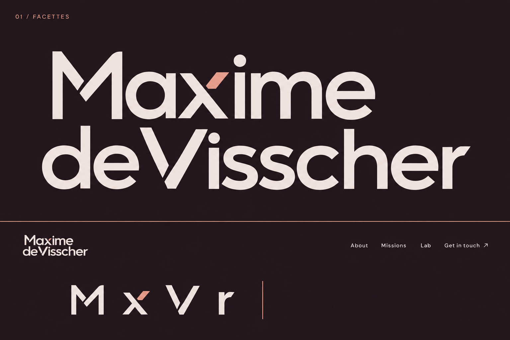

Une signature issue du site.
Trois nouvelles directions qui reprennent la construction, les diagonales et les fragments du portrait. Le caractère vient cette fois du dessin des lettres, avec un accent cuivré intégré au nom.
Des découpes diagonales dans le M et le V, et un fragment cuivré dans le x. Les lettres reprennent les formes pliées du portrait, tout en gardant une silhouette pleine et lisible.
Voir en grand ↗
Images de recherche générées avec image_gen. Ces planches permettent de choisir un dessin ; la signature retenue nécessitera une reconstruction vectorielle et un ajustement à petite taille. Briefs de génération.